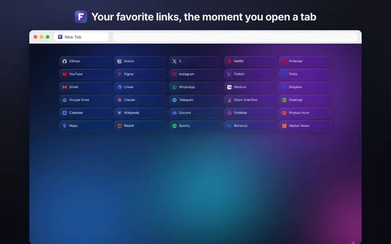
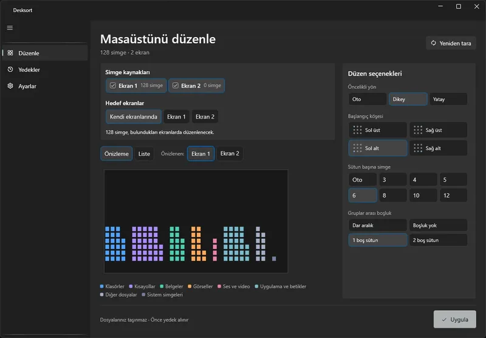
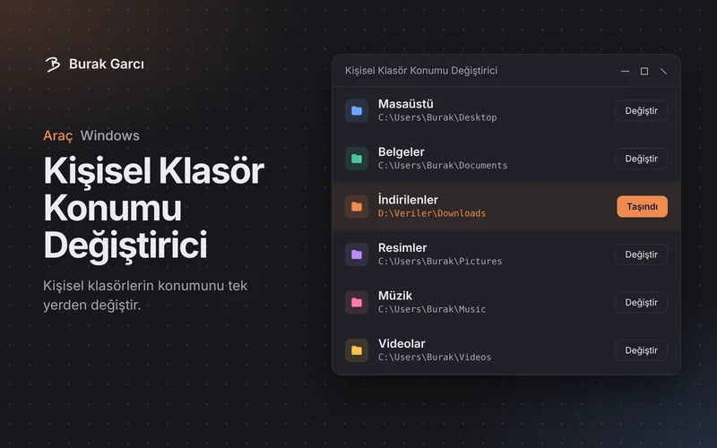
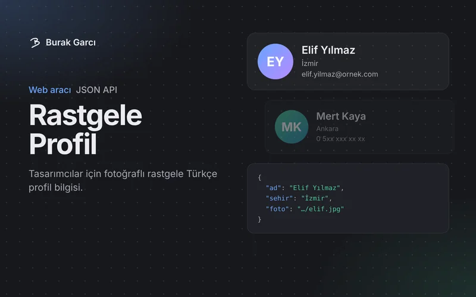

Burak Garcı
I build bots and web tools, and keep them running for my clients.
Projects

ExtensionFlit New TabShows the bookmarks you pick the moment you open a new tab. Fast and privacy-first. Formerly Sade New Tab.
AppDesksortA Windows app that sorts desktop icons by type (folders, shortcuts, documents, images) and arranges them in groups. You pick the direction, starting corner and icons per column. Files are never moved and a backup is taken first.
ToolKişisel Klasör Konumu DeğiştiriciA small tool to change where Windows personal folders like Documents, Downloads and Desktop live, all from one place.
Web toolRastgele ProfilGenerates random Turkish profiles with photos for designers: name, city, contact details and avatar. Also available as a JSON API.